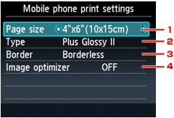

When printing from a mobile phone through Bluetooth communication, select the page size, media type, bordered/borderless layout, and so on.
For details on how to print from a mobile phone through Bluetooth communication, see Printing from a Mobile Phone via Bluetooth Communication.
 Note
Note-
This menu is displayed only when the optional Bluetooth Unit is attached.

-
Page size
Select the page size for printing photos saved on a mobile phone.
-
Type (Media type)
Select the media type for printing photos saved on a mobile phone.
-
Border (Bordered/Borderless print)
Select the bordered/borderless layout for printing photos saved on a mobile phone.
-
Image optimizer
Select ON to correct and smooth out the jagged contours when printing.